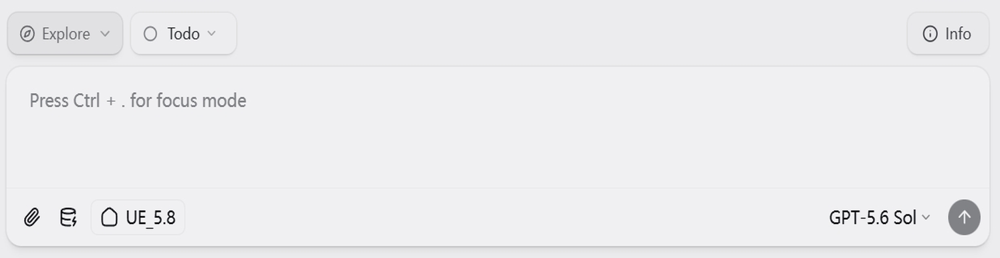

Working Directory
The current working directory (cwd) where your agent executes commands
The working directory is the current working directory (cwd) for your agent—just like cwd in a terminal. All file operations and bash commands execute relative to this folder by default. When you ask the agent to "read the config file" or "run the tests," it starts here.
You can change the working directory at any point during a conversation.
What Is the Working Directory?
Think of it as opening a terminal and running cd /path/to/project. Everything the agent does starts from this location:
- Read files and their contents
- Write new files or overwrite existing ones
- Edit files with precise text replacements
- Search with Glob (file patterns) and Grep (content search)
- Execute bash commands in that directory context
This is different from Sources, which connect to external services through MCP tools. The working directory is for local, direct filesystem access.
Setting Your Working Directory
Per-Session
Click the folder badge in the chat input area to set or change the cwd for your current conversation:

The badge shows:
- Folder icon with the current directory name
- Git branch (if the directory is a git repository)
Click anytime to change your cwd mid-session:
- Choose from recent directories
- Browse for a new folder
- Reset to the session's default folder
Changing the working directory takes effect immediately—subsequent commands will run from the new location.
Workspace Default
Set a default working directory for all new sessions in your workspace:
- Open Settings → Workspace Settings
- Find Default Working Directory
- Click to select a folder
New sessions in this workspace will start with this directory selected.
Available Tools
These SDK-native tools all operate from your cwd by default:
| Tool | Purpose | Example |
|---|---|---|
| Read | View file contents | Read a configuration file |
| Write | Create or overwrite files | Write a new component |
| Edit | Make precise text replacements | Fix a bug in existing code |
| Glob | Find files by pattern | Find all *.tsx files |
| Grep | Search file contents | Find usages of a function |
| Bash | Run shell commands | Run tests, git operations |
These tools work directly on your filesystem without going through MCP.
Project Context with CLAUDE.md
If your working directory contains a CLAUDE.md file, its contents are automatically injected into the agent's context. Use this to provide:
- Project structure and conventions
- Build and test commands
- Important files and their purposes
- Team-specific guidelines
# CLAUDE.md
This is a Next.js application with TypeScript.
## Commands
- `npm run dev` - Start development server
- `npm test` - Run tests
- `npm run build` - Production build
## Structure
- `src/components/` - React components
- `src/lib/` - Utility functions
- `src/app/` - Next.js app router pagesThe agent reads this file automatically when you start a conversation with that working directory.
Working Directory vs Sources
| Aspect | Working Directory | Sources |
|---|---|---|
| Access method | Direct SDK tools (Read, Write, Bash) | MCP tools (mcp__slug__toolname) |
| Scope | Single local folder | Multiple services/paths |
| Authentication | None needed | OAuth, API keys, tokens |
| Permission control | SDK permission modes | Per-source permissions.json |
| Project context | CLAUDE.md injection | guide.md instructions |
| Typical use | Coding, local files | External services, remote data |
When to Use Each
- Writing and editing code
- Running build scripts and tests
- Git operations (commit, branch, diff)
- Reading project files and configs
- Any task involving local files
- Accessing external services (GitHub, Linear, Slack)
- Reading from remote APIs
- Connecting to cloud databases
- Accessing files in other locations via MCP filesystem server
- Any task requiring authentication to external services
Many workflows combine both:
- Pull issues from Linear (source), then fix them in code (working directory)
- Read documentation from a web API (source), then write implementation (working directory)
- Fetch data from a database (source), then generate reports locally (working directory)
Best Practices
A well-maintained CLAUDE.md file helps the agent understand your project structure, conventions, and common tasks. Update it as your project evolves.
Instead of setting your home folder as the working directory, point to the specific project you're working on. This keeps the agent focused and improves performance.
When your working directory is a git repository, the agent can see the current branch and use git commands effectively. Use Explore mode to safely review changes before committing.
Need to access files in multiple locations? Use the working directory for your main project and add a local folder for other directories you reference occasionally.